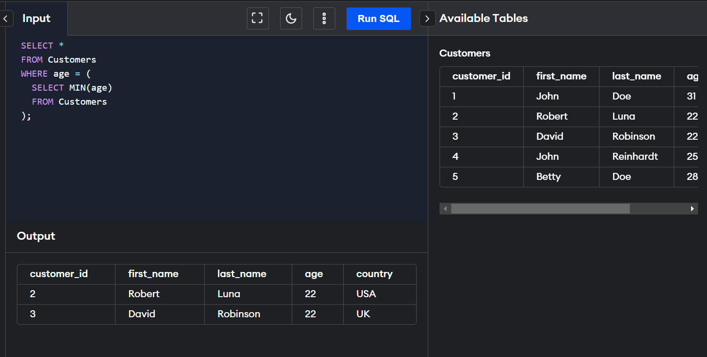

Nested Queries
Nested query is one of the most useful functionalities of SQL. Nested queries are useful when we
want to write complex queries where one query uses the result from another query. Nested queries will
have multiple SELECT statements nested together. A subquery is a SELECT statement nested within another
SELECT statement.A nested query in SQL contains a query inside another query. The outer query will use
the result of the inner query. For instance, a nested query can have two SELECT statements, one on the inner
query and the other on the outer query.
The general syntax of nested queries will be:
SELECT column_name [, column_name ]
FROM table1 [, table2 ]
WHERE column_name OPERATOR
(
SELECT column_name [, column_name ]
FROM table1 [, table2 ]
[WHERE]
)
The SELECT query inside the brackets () is the inner query, and the SELECT query outside the brackets
is the outer query. The outer query uses the result of the inner query.
Independent Nested Queries
In independent nested queries, the execution order is from the innermost query to the outer query. An outer
query won't be executed until its inner query completes its execution. The outer query uses the result of the
inner query. Operators such as IN, NOT IN, ALL, and ANY are used to write independent nested queries.
1. The IN operator checks if a column value in the outer query's result is present in the inner query's result.
The final result will have rows that satisfy the IN condition.
2. The NOT IN operator checks if a column value in the outer query's result is not present in the inner query's
result. The final result will have rows that satisfy the NOT IN condition.
3. The ALL operator compares a value of the outer query's result with all the values of the inner query's result
and returns the row if it matches all the values.
4. The ANY operator compares a value of the outer query's result with all the inner query's result values and returns
the row if there is a match with any value.
Co-related Nested Queries
In co-related nested queries, the inner query uses the values from the outer query to execute the inner query
for every row processed by the outer query. The co-related nested queries run slowly because the inner query is
executed for every row of the outer query's result.
